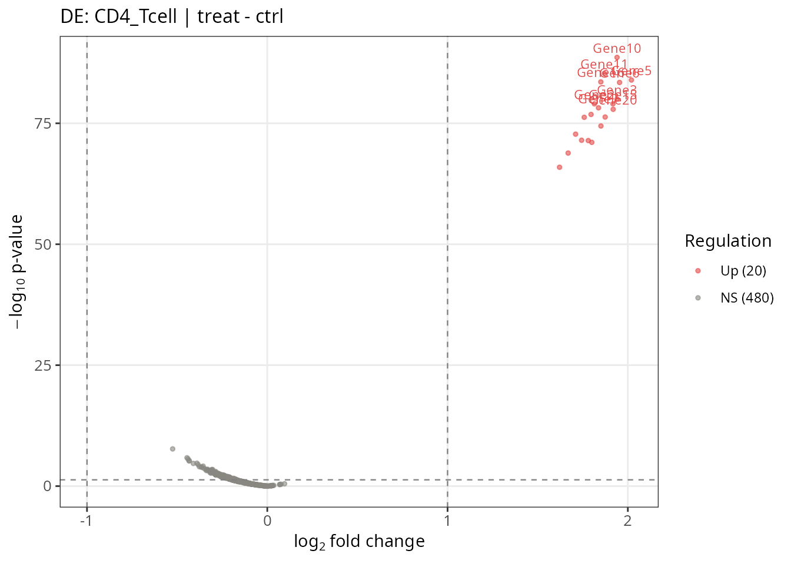
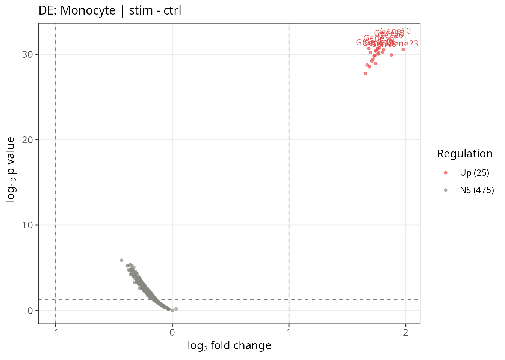

vignettes/scFastDE_workflow.Rmd
scFastDE_workflow.RmdMulti-donor single-cell RNA-seq studies are now the norm for disease
studies, clinical trials, and population-level atlases. The standard
approach to differential expression (DE) in these datasets is
pseudo-bulk analysis: aggregate per-cell counts into per-donor profiles,
then apply bulk DE tools like DESeq2 or
edgeR.
This works well but has three underappreciated problems:
Problem 1: Speed. Bulk DE tools fit one model per gene in a serial R loop. On a dataset with 30,000 genes and 50 donors, this loop runs 30,000 times. At scale — 100k+ cells, multiple cell types — this becomes the analysis bottleneck.
Problem 2: Donor weighting. Standard pseudo-bulk tools treat a donor with 5 cells identically to a donor with 500 cells. The 5-cell pseudo-bulk is far noisier, yet gets equal weight in the DE model.
Problem 3: Paired designs. Many studies collect cells from the same donors under multiple conditions (e.g. before/after treatment, or stimulated/unstimulated). Naively aggregating by donor alone mixes conditions together, destroying the treatment signal.
scFastDE addresses all three:
limma::lmFit in one call, which uses LAPACK
routines to fit all gene models simultaneously.sqrt(n_cells), giving principled influence to
well-represented samples.fastDE
automatically detects whether donors appear in multiple conditions and
builds the appropriate linear model (paired
~ 0 + condition + donor or unpaired
~ 0 + condition).
if (!requireNamespace("BiocManager", quietly = TRUE))
install.packages("BiocManager")
BiocManager::install("scFastDE")In an unpaired design, each donor belongs to exactly
one condition (e.g. Donors 1–6 = healthy, Donors 7–12 = disease).
scFastDE automatically detects this and uses a simple
~ 0 + condition model.
library(scFastDE)
library(SingleCellExperiment)
# Simulate a multi-donor, two-condition dataset (unpaired)
set.seed(2024)
n_genes <- 500
n_cells <- 120
counts <- matrix(rpois(n_genes * n_cells, 8L),
nrow = n_genes, ncol = n_cells)
rownames(counts) <- paste0("Gene", seq_len(n_genes))
colnames(counts) <- paste0("Cell", seq_len(n_cells))
# Inject DE signal: first 20 genes upregulated in treatment
counts[1:20, 61:120] <- counts[1:20, 61:120] * 4L
sce <- SingleCellExperiment(assays = list(counts = counts))
sce$donor <- rep(paste0("Donor", 1:12), each = 10)
sce$cell_type <- "CD4_Tcell"
sce$condition <- rep(c("ctrl", "treat"), each = 60)
sce
#> class: SingleCellExperiment
#> dim: 500 120
#> metadata(0):
#> assays(1): counts
#> rownames(500): Gene1 Gene2 ... Gene499 Gene500
#> rowData names(0):
#> colnames(120): Cell1 Cell2 ... Cell119 Cell120
#> colData names(3): donor cell_type condition
#> reducedDimNames(0):
#> mainExpName: NULL
#> altExpNames(0):Before aggregation, remove donor-cell type combinations with too few cells.
sce <- filterSparseDonors(sce,
donor = "donor",
cell_type = "cell_type",
min_cells = 5)
ncol(sce)
#> [1] 120
pb <- fastPseudobulk(sce,
donor = "donor",
cell_type = "cell_type",
target_type = "CD4_Tcell")
cat("Pseudo-bulk matrix:", nrow(pb$pseudobulk),
"genes x", ncol(pb$pseudobulk), "donors\n")
#> Pseudo-bulk matrix: 500 genes x 12 donors
cat("\nDonor weights (sqrt of cell count):\n")
#>
#> Donor weights (sqrt of cell count):
print(round(pb$donor_weights, 2))
#> Donor1 Donor2 Donor3 Donor4 Donor5 Donor6 Donor7 Donor8 Donor9 Donor10
#> 3.16 3.16 3.16 3.16 3.16 3.16 3.16 3.16 3.16 3.16
#> Donor11 Donor12
#> 3.16 3.16Notice that all donors have equal cell counts here (10 each), so weights are identical. In real data, weights will vary substantially.
result <- fastDE(sce,
donor = "donor",
cell_type = "cell_type",
condition = "condition",
target_type = "CD4_Tcell",
min_cells = 5,
min_cpm = 1,
min_donors = 2)
result
#> FDEResult
#> Genes tested : 500
#> Samples : 12
#> Significant : 149 (adj.P.Val < 0.05)
#> Cell type : CD4_Tcell
#> Condition : condition
#> Design : unpaired
# Top significant genes
dt <- as.data.frame(deTable(result))
dt_sorted <- dt[order(dt$adj.P.Val), ]
head(dt_sorted[, c("gene", "logFC", "P.Value", "adj.P.Val")], 15)
#> gene logFC P.Value adj.P.Val
#> Gene10 Gene10 1.940020 2.392649e-89 1.196324e-86
#> Gene11 Gene11 1.869497 4.761455e-86 1.190364e-83
#> Gene5 Gene5 2.019865 1.125598e-84 1.875997e-82
#> Gene16 Gene16 1.850108 2.794630e-84 3.493288e-82
#> Gene6 Gene6 1.954038 3.604269e-84 3.604269e-82
#> Gene3 Gene3 1.940079 1.012996e-80 8.441630e-79
#> Gene2 Gene2 1.814565 9.484184e-80 5.977602e-78
#> Gene15 Gene15 1.917421 9.564163e-80 5.977602e-78
#> Gene7 Gene7 1.837197 6.391214e-79 3.550675e-77
#> Gene20 Gene20 1.918719 1.290645e-78 6.453225e-77
#> Gene17 Gene17 1.795905 1.479058e-77 6.722991e-76
#> Gene12 Gene12 1.874153 5.052708e-77 2.105295e-75
#> Gene8 Gene8 1.758143 5.758639e-77 2.214861e-75
#> Gene13 Gene13 1.850643 3.588716e-75 1.281684e-73
#> Gene14 Gene14 1.710195 1.754404e-73 5.848012e-72
# Summary
sig <- sum(dt$adj.P.Val < 0.05, na.rm = TRUE)
cat(sprintf("\n%d / %d genes significant (FDR < 0.05)\n",
sig, nrow(dt)))
#>
#> 149 / 500 genes significant (FDR < 0.05)
cat(sprintf("Injected genes recovered: %d / 20\n",
sum(paste0("Gene", 1:20) %in%
rownames(dt)[dt$adj.P.Val < 0.05])))
#> Injected genes recovered: 20 / 20
plotDEResults(result, fdr_thresh = 0.05, lfc_thresh = 1, top_n = 10)
Volcano plot of DE results. Red = upregulated, blue = downregulated at FDR < 0.05 and |logFC| > 1.
Here we demonstrate why weighting matters. We compare
fastDE output when one donor has far fewer cells than the
others.
# Create an unbalanced dataset
set.seed(99)
sce_unbal <- sce
# Simulate donor 1 having only 2 cells by keeping just 2
keep <- c(which(sce$donor != "Donor1"),
which(sce$donor == "Donor1")[1:2])
sce_unbal <- sce_unbal[, keep]
pb_unbal <- fastPseudobulk(sce_unbal,
donor = "donor",
cell_type = "cell_type",
target_type = "CD4_Tcell")
cat("Donor weights (unbalanced):\n")
#> Donor weights (unbalanced):
print(round(pb_unbal$donor_weights, 2))
#> Donor2 Donor3 Donor4 Donor5 Donor6 Donor7 Donor8 Donor9 Donor10 Donor11
#> 3.16 3.16 3.16 3.16 3.16 3.16 3.16 3.16 3.16 3.16
#> Donor12 Donor1
#> 3.16 1.41Donor1’s weight (sqrt(2) ≈ 1.41) is much lower than the
other donors (sqrt(10) ≈ 3.16), so its noisy pseudo-bulk
has proportionally less influence on the DE estimates — without being
discarded entirely.
Many single-cell experiments use a paired design where the same donors contribute cells under multiple conditions — for example, stimulated vs unstimulated PBMCs from the same individuals (Kang et al. 2018).
scFastDE automatically detects paired
designs: when the same donor IDs appear in more than one condition,
fastDE switches to a paired model that:
~ 0 + condition + donor design matrix that
blocks on donorThis is critical because naively aggregating by donor alone would mix conditions together, destroying the treatment signal entirely.
# Simulate paired data: SAME 6 donors in BOTH conditions
set.seed(2025)
n_genes <- 500
n_donors <- 6
cells_per_donor_cond <- 15
n_cells <- n_donors * 2 * cells_per_donor_cond # 180 cells
counts <- matrix(rpois(n_genes * n_cells, 8L),
nrow = n_genes, ncol = n_cells)
rownames(counts) <- paste0("Gene", seq_len(n_genes))
colnames(counts) <- paste0("Cell", seq_len(n_cells))
# Inject DE signal: first 25 genes upregulated in stimulated condition
stim_cols <- seq(n_donors * cells_per_donor_cond + 1, n_cells)
counts[1:25, stim_cols] <- counts[1:25, stim_cols] * 4L
sce_paired <- SingleCellExperiment(assays = list(counts = counts))
# KEY: same donors (D1–D6) appear in BOTH conditions
sce_paired$donor <- rep(
rep(paste0("D", seq_len(n_donors)), each = cells_per_donor_cond),
2
)
sce_paired$cell_type <- "Monocyte"
sce_paired$condition <- rep(c("ctrl", "stim"),
each = n_donors * cells_per_donor_cond)
# Verify: each donor appears in both conditions
cat("Cells per donor and condition:\n")
#> Cells per donor and condition:
print(table(sce_paired$donor, sce_paired$condition))
#>
#> ctrl stim
#> D1 15 15
#> D2 15 15
#> D3 15 15
#> D4 15 15
#> D5 15 15
#> D6 15 15When the condition argument is passed,
fastPseudobulk creates one pseudo-bulk column per
donor-condition pair:
pb_paired <- fastPseudobulk(sce_paired,
donor = "donor",
cell_type = "cell_type",
target_type = "Monocyte",
condition = "condition")
cat(sprintf("Pseudo-bulk: %d genes × %d samples\n",
nrow(pb_paired$pseudobulk),
ncol(pb_paired$pseudobulk)))
#> Pseudo-bulk: 500 genes × 12 samples
cat(" (6 donors × 2 conditions = 12 samples)\n\n")
#> (6 donors × 2 conditions = 12 samples)
cat("Sample info:\n")
#> Sample info:
print(pb_paired$sample_info)
#> sample_id donor condition
#> 1 D1___ctrl D1 ctrl
#> 2 D2___ctrl D2 ctrl
#> 3 D3___ctrl D3 ctrl
#> 4 D4___ctrl D4 ctrl
#> 5 D5___ctrl D5 ctrl
#> 6 D6___ctrl D6 ctrl
#> 7 D1___stim D1 stim
#> 8 D2___stim D2 stim
#> 9 D3___stim D3 stim
#> 10 D4___stim D4 stim
#> 11 D5___stim D5 stim
#> 12 D6___stim D6 stimfastDE auto-detects the paired design and reports
it:
result_paired <- fastDE(sce_paired,
donor = "donor",
cell_type = "cell_type",
condition = "condition",
target_type = "Monocyte",
min_cells = 5,
min_cpm = 1,
min_donors = 2)
result_paired
#> FDEResult
#> Genes tested : 500
#> Samples : 12
#> Significant : 343 (adj.P.Val < 0.05)
#> Cell type : Monocyte
#> Condition : condition
#> Design : pairedNote the output shows Design: paired and
Samples: 12 (not 6).
dt_paired <- as.data.frame(deTable(result_paired))
dt_paired_sorted <- dt_paired[order(dt_paired$adj.P.Val), ]
sig_paired <- sum(dt_paired$adj.P.Val < 0.05, na.rm = TRUE)
recovered <- sum(paste0("Gene", 1:25) %in%
rownames(dt_paired)[dt_paired$adj.P.Val < 0.05])
cat(sprintf("Significant genes (FDR < 0.05): %d / %d\n",
sig_paired, nrow(dt_paired)))
#> Significant genes (FDR < 0.05): 343 / 500
cat(sprintf("Injected DE genes recovered: %d / 25\n", recovered))
#> Injected DE genes recovered: 25 / 25
plotDEResults(result_paired, fdr_thresh = 0.05, lfc_thresh = 1,
top_n = 10)
Volcano plot for paired design. The paired model correctly blocks on donor, recovering the injected DE signal.
The paired model accounts for donor-level variation (age, genetics, etc.) as a blocking factor. This has two major benefits:
On real data like the Kang et al. 2018 IFN-β PBMC dataset, the paired model recovers 5,550 DE genes (including all 10 known IFN-β response genes with logFCs of 2–8), whereas naively aggregating by donor alone recovers zero.
sessionInfo()
#> R version 4.6.2 (2026-10-29)
#> Platform: x86_64-pc-linux-gnu
#> Running under: Ubuntu 26.04.1 LTS
#>
#> Matrix products: default
#> BLAS: /usr/lib/x86_64-linux-gnu/blas/libblas.so.3.12.1
#> LAPACK: /usr/lib/x86_64-linux-gnu/lapack/liblapack.so.3.12.1; LAPACK version 3.12.0
#>
#> locale:
#> [1] LC_CTYPE=en_US.UTF-8 LC_NUMERIC=C
#> [3] LC_TIME=en_US.UTF-8 LC_COLLATE=en_US.UTF-8
#> [5] LC_MONETARY=en_US.UTF-8 LC_MESSAGES=en_US.UTF-8
#> [7] LC_PAPER=en_US.UTF-8 LC_NAME=C
#> [9] LC_ADDRESS=C LC_TELEPHONE=C
#> [11] LC_MEASUREMENT=en_US.UTF-8 LC_IDENTIFICATION=C
#>
#> time zone: Asia/Kolkata
#> tzcode source: system (glibc)
#>
#> attached base packages:
#> [1] stats4 stats graphics grDevices utils datasets methods
#> [8] base
#>
#> other attached packages:
#> [1] SingleCellExperiment_1.35.2 SummarizedExperiment_1.43.0
#> [3] Biobase_2.73.2 GenomicRanges_1.65.4
#> [5] Seqinfo_1.3.2 IRanges_2.47.5
#> [7] S4Vectors_0.51.10 BiocGenerics_0.59.12
#> [9] generics_0.1.4 MatrixGenerics_1.25.0
#> [11] matrixStats_1.5.0 scFastDE_0.99.3
#> [13] BiocStyle_2.41.0
#>
#> loaded via a namespace (and not attached):
#> [1] gtable_0.3.6 xfun_0.62 bslib_0.12.0
#> [4] ggplot2_4.0.3 htmlwidgets_1.6.4 lattice_0.23-1
#> [7] vctrs_0.7.3 tools_4.6.2 parallel_4.6.2
#> [10] tibble_3.3.1 pkgconfig_2.0.3 Matrix_1.7-6
#> [13] RColorBrewer_1.1-3 S7_0.2.2 desc_1.4.3
#> [16] lifecycle_1.0.5 compiler_4.6.2 farver_2.1.2
#> [19] textshaping_1.0.5 statmod_1.5.2 codetools_0.2-20
#> [22] htmltools_0.5.9 sass_0.4.10 yaml_2.3.12
#> [25] pkgdown_2.2.1 pillar_1.11.1 jquerylib_0.1.4
#> [28] BiocParallel_1.47.0 DelayedArray_0.39.8 cachem_1.1.0
#> [31] limma_3.99.4 abind_1.4-8 tidyselect_1.2.1
#> [34] digest_0.6.39 dplyr_1.2.1 bookdown_0.48
#> [37] labeling_0.4.3 fastmap_1.2.0 grid_4.6.2
#> [40] cli_3.6.6 SparseArray_1.13.4 magrittr_2.0.5
#> [43] S4Arrays_1.13.2 withr_3.0.3 scales_1.4.0
#> [46] rmarkdown_2.32 XVector_0.53.0 otel_0.2.0
#> [49] ragg_1.5.2 evaluate_1.0.5 knitr_1.52
#> [52] rlang_1.3.0 glue_1.8.1 BiocManager_1.30.27
#> [55] jsonlite_2.0.0 R6_2.6.1 systemfonts_1.3.2
#> [58] fs_2.1.0